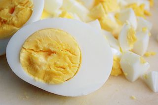
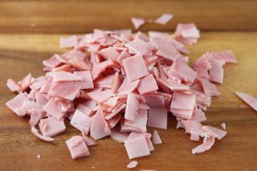
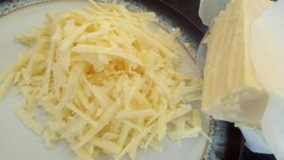
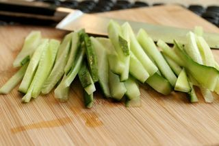
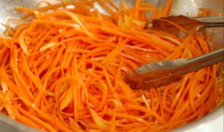
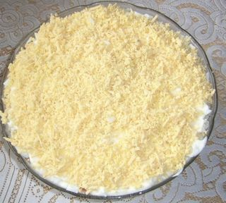

Шаг 1: подготавливаем яйца.

Куриные яйца нужно сварить вкрутую. Для этого поместите их в сотейник, залейте водой и варите 10-14 минут после закипания. А чтобы вареные яйца проще было почистить, сразу после варки окуните их в ледяную воду и держите там до тех пор, пока они совсем не остынут.
Вареные яйца почистите и покрошите на мелкие кубики.
Шаг 2: подготавливаем ветчину.

Ветчину (или копченую колбасу, тут уж что кому больше нравится или что попалось под рукой) очистите от шкурки и порежьте кубиками или тоненькой соломкой.
Шаг 3: подготавливаем сыр.

Кусочек сыра измельчите с помощью средней или мелкой терки. А чтобы дело пошло быстрее, смочите терку прохладной водой, тогда сыр будет к ней меньше прилипать и потому вам будет гораздо легче.
Шаг 4: подготавливаем огурец.

Промойте огурец, отрежьте кончики и обязательно проверьте, не горчит ли кожура. Возможно, овощ придется очистить от шкурки полностью или частично.
Подготовленный огурец порежьте соломкой или кубиками.
Шаг 5: подготавливаем морковь по-корейски.

Морковь по-корейски можно купить в магазине, а можно взять ту, что вы заготовили на зиму
по этому рецепту. Такая морковка уже нарезанная, так что просто отряхните ее от лишней жидкости и добавляйте в салат.
Шаг 6: собираем салат.

Укладывать салат "Флоренция" будем слоями. Сразу отмечу, что я салат этот не солю, так как здесь присутствуют сразу несколько довольно соленых ингредиентов: ветчина, майонез, сыр и морковь по-корейски. Но это дело вкуса, потому что кто-то любит побольше соли, кто-то поменьше, поэтому решайте сами. Но отвлеклись.
Первым слоем уложите ветчину, густо полив ее майонезом, затем яйца, опять смазываем майонезом, огурец, майонез, морковь по-корейски, майонез и сверху тертый сыр. Верхний слой смазывать майонезом уже не нужно. Все, салат "Флоренция" готов, и его можно подавать на стол.